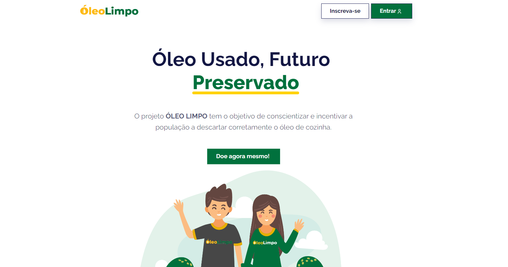
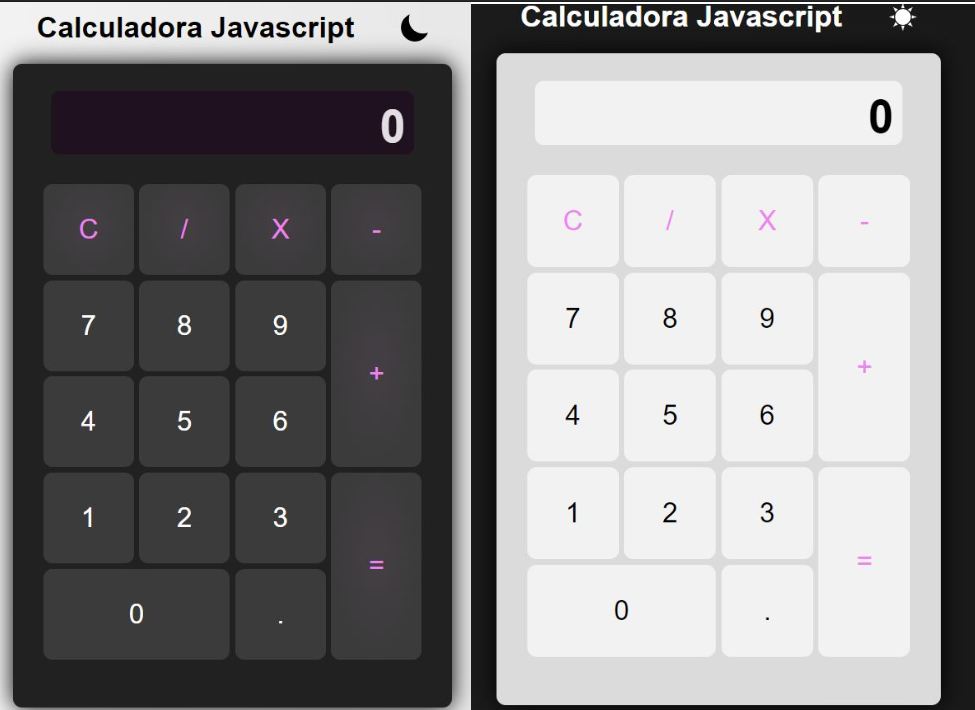

Clique aqui para acessar o repositório
Desenvolvimento de um site dedicado à conscientização e engajamento para a coleta
de óleo de cozinha usado, alinhado com o Objetivo de Desenvolvimento Sustentável número 6 da OMS,
visando promover a gestão sustentável da água e saneamento.
Primeiramente, o site fora desenvolvido como projeto para a matéria UPX-II do curso de Análise e
Desenvolvimento de Sistemas da Facens, pela equipe FutureMinds (da qual eu fiz parte). Eu utilizei o
Frontend do site para fazer todo o Backend, adquirindo experiência e conhecimento no processo.
Desenvolvimento de um site dedicado à conscientização e engajamento para a coleta de óleo de cozinha
usado, alinhado com o Objetivo de Desenvolvimento Sustentável número 6 da OMS, visando promover a gestão
sustentável da água e saneamento.
Primeiramente, o site fora desenvolvido como projeto para a matéria UPX-II do curso de Análise e
Desenvolvimento de Sistemas da Facens, pela equipe FutureMinds (da qual eu fiz parte). Eu utilizei o
Frontend do site para fazer todo o Backend, adquirindo experiência e conhecimento no
processo.
Conceitos
abordados:
💻 Backend Development
🗝 Password Hashing
🖥 API Implementation
📂 File Upload
🔐 Encapsulated and Parameterized SQL queries
🔍 Form Handling
⚡ Error Handling
👁️🗨️ Version Control
⚠ Modal Windows
📄 Dynamic Content Generation
👤 Session Management
🖇 URL Manipulation
Clique aqui para acessar o repositório
Projetinho de calculadora, bem básico, porém, bem sólido para aprender conceitos
inicias de HTML, CSS e Javascript.
Conceitos praticados no projeto:
-Variáveis CSS para fazer o dark/light mode;
-Comandos e funções do Javascript; (função eval() salvou muito);
-Flex-box CSS para manipulação do html;
-Classes e id's HTML;
-Bom uso dos selectors no CSS;
-Versionamento utilizando git;
-Formatação de número usando Javascript (transformar 1000000 em 1,000,000)